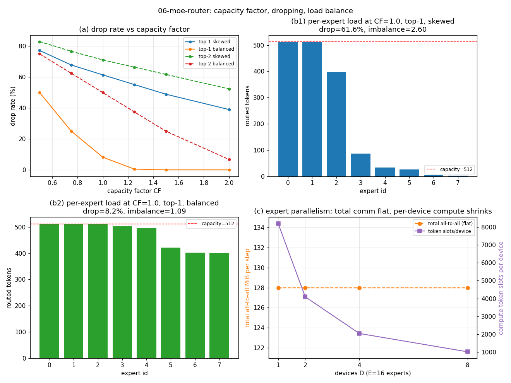

Expert routing simulator: capacity factor, token dropping, expert parallelism
A mixture-of-experts (MoE) layer promises the capacity of a huge model at the compute cost of a small one: each token is processed by only top_k of E experts. In practice the router must dispatch tokens to experts that live on different devices, and each expert has a fixed per-step capacity. When too many tokens pick the same popular expert, the overflow is silently dropped — those tokens skip the expert entirely. Dropping is the hidden tax of MoE: it never appears in the parameter count, but it directly reduces the tokens that receive full expert computation.
Most MoE discussions focus on gating (top-k softmax) and on the parameter savings. What is rarely quantified in one place is the three-way tradeoff that actually governs MoE serving:
A numpy-only simulator (src/llm_inference_engine/moe_router/) with three pieces:
gating.py — topk_gate (softmax + top-k + renormalize), noisy_gate (logit noise to simulate imperfect routing), balanced_gate (models the steady-state effect of an aux load-balancing loss as reduced logit skew).router.py — route dispatches tokens in order, drops assignments beyond expert_capacity, and reports drop rate, per-expert counts, imbalance ratio (max/mean), and processed tokens.parallel.py — shard_experts, alltoall_bytes (n_tokens top_k d_model bytes_per_elem 2, dispatch + combine), device_load (per-device compute slots and comm share).Experiments are seeded (np.random.default_rng(51)); two consecutive runs produce identical headlines, charts, and results/results.md.
| top-1, CF=1.0 | Drop rate | Imbalance (max/mean) |
|---|---|---|
| Skewed popularity | 61.0% | 2.56 |
| Balanced (aux-loss) | 9.3% | 1.10 |
4096 tokens, 8 experts, seed 51, 4 runs identical. Skewed gating at CF=2.0 still drops 38.1% — balancing beats raw capacity. Expert parallelism (16 experts, 8 devices): 16.0 MiB/device all-to-all per step; total comm independent of device count.

experiments/run_experiments.py — re-running reproduces these exactly.src/llm_inference_engine/moe_router/
gating.py # top-k, noisy, and balanced gating
router.py # capacity-limited dispatch + drop accounting
parallel.py # expert-parallel sharding + all-to-all cost
06-moe-router/
experiments/run_experiments.py # CF sweep + EP scaling
results/ # results.md + charts.png (generated)
Full source, tests, and experiment code: 06-moe-router/ ·
Run: cd 06-moe-router && python3 experiments/run_experiments.py